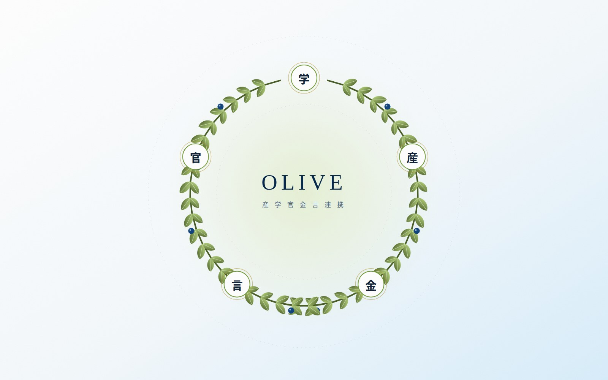

メンバー
産学官金言の全体連携体制。
OLIVEへの参画は、一機関では実現できない規模のデータ・人材・信用力を相互に得る場です。参画予定機関と組織構成をまとめました。

産学官金言の参画予定機関
2026年11月時点・調整中を含む。
岡山大学、岡山県立大学、岡山理科大学、ノートルダム清心女子大学、岡山商科大学、中国学園大学、環太平洋大学、津山工業高等専門学校
N-E.X.T.ハイスクール 改革先導拠点校（岡山県）
岡山県、岡山県教育委員会、岡山市、倉敷市、津山市、真庭市
岡山経済同友会、岡山県商工会議所連合会、岡山県商工会連合会、岡山県中小企業団体中央会
ちゅうぎんフィナンシャルグループ
山陽新聞社、テレビせとうち、8bitNews、大学横断学生広報サークル
岡山経済研究所、岡山県産業振興財団、ジェトロ岡山
組織構成（設置予定）
決めるところと、動かすところを、一本の線でつなぐ。
産学官金言のトップが役員会に、同じ機関の実務者が運営委員会に入ります。両会議体は2040年のグランドデザインを検討し、4部会・ユースボード・アドバイザリーボードを束ねます。決定を実行するのが、法人格を持つ「おかやま地域未来共創機構」です。
おかやま地域未来共創プラットフォーム
HUBOkayama Leading Initiative for Value creation and Education
次世代人材育成部会
部会長・副部会長
リスキリング実装部会
部会長・副部会長
階層別リスキリング・社会人研究員の窓口。需給データを共通の物差しに、強みを持つ大学が育成し大学間で提供
広報戦略部会
部会長・副部会長
参画メディア・学生と、保護者世代・県外の若者へ届く発信を設計
データ戦略部会
部会長・副部会長
人材需給ギャップダッシュボードの構築・運用。各大学の役割分担を決める共通の物差しに
学生の当事者参画
参画大学・高専・高校の学生で構成する常設の学生参画組織。未来を描く／モニターする／発信する／伴走する ― 4つの役割を担い、各部会・おかやま円卓会議へ直接提言する。「岡山の未来を描く対話」から発足メンバーを選出。
県内外の有識者・年1〜2回
年1〜2回の包括的レビューを実施。ユースボードの提言は部会を経て運営委員会に報告され、アドバイザリーボードのレビューと併せて次年度の事業計画に反映される。
おかやま地域未来共創機構
プラットフォームの決定を実行する法人格。事務局・契約・財源・コーディネーターを担う。
※ 本ページの組織構成はOLIVE構想資料（令和8年10月時点）に基づく設置予定であり、参画機関とのご相談を経て確定します。